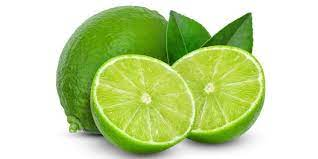
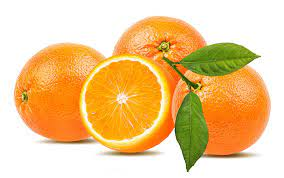
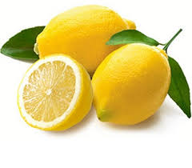

Jenis Jeruk

Jeruk Nipis
Jeruk nipis mengandung vitamin C yang memiliki banyak manfaat untuk kulit. Selain itu, sifat antibakteri pada buah ini juga diyakini bisa menyembuhkan jerawat membandel.

Jeruk Manis
Jeruk ini memiliki rasa yang manis dan ukuran yang lebih kecil dibandingkan dengan jeruk lainnya. Jeruk Mandarin juga memiliki kulit yang tipis, sehingga sangat mudah dikupas. Jeruk Mandarin biasanya tumbuh di daerah tropis dan sub-tropis.

Jeruk Lemon
lemon mengandung berbagai nutrisi yang mampu meningkatkan kesehatan tubuh dan kulit. Beberapa di antaranya, vitamin C, air, protein, serat, magnesium, kalium, dan kalsium